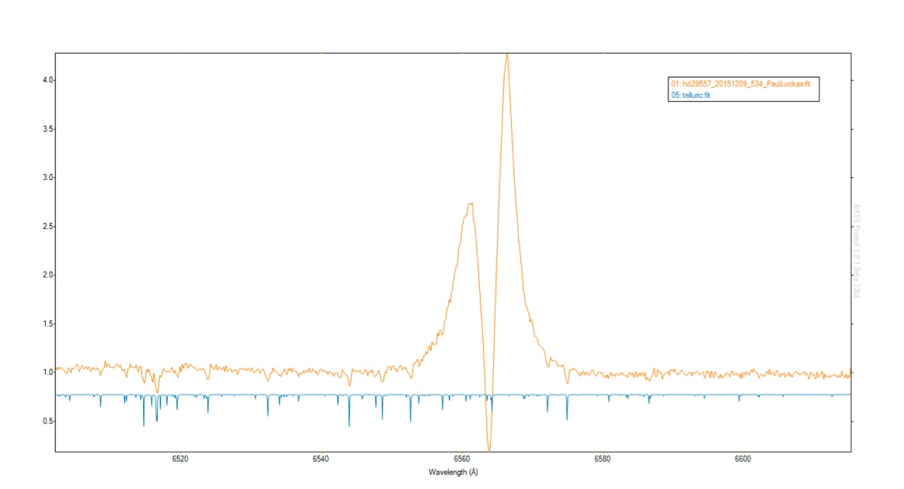
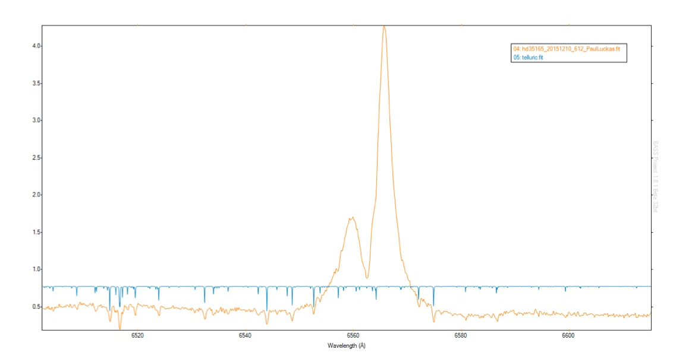
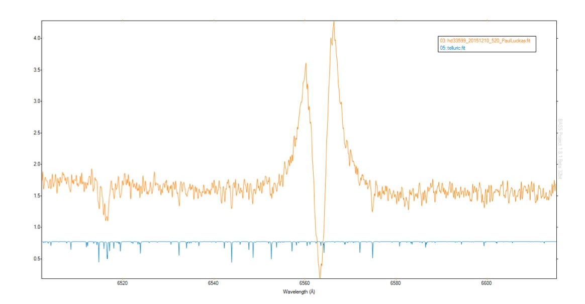
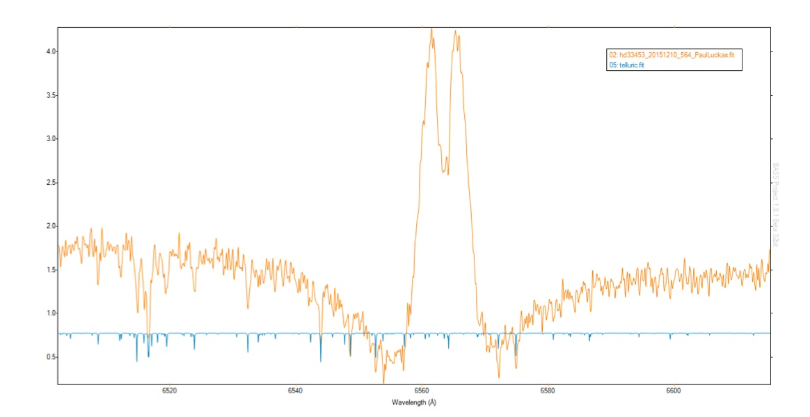

The following is a small sample of Be stars acquired as part of the BeSS initiative showing excellent alignment with atmospheric telluric lines, despite using only a 3 line, second order polynomial dispersion calculation for spectral calibration.



